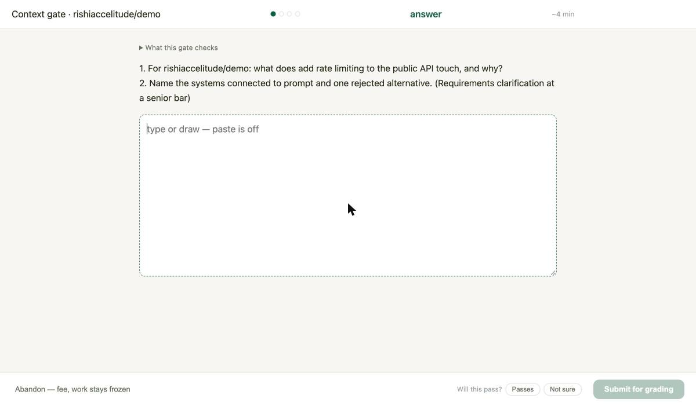
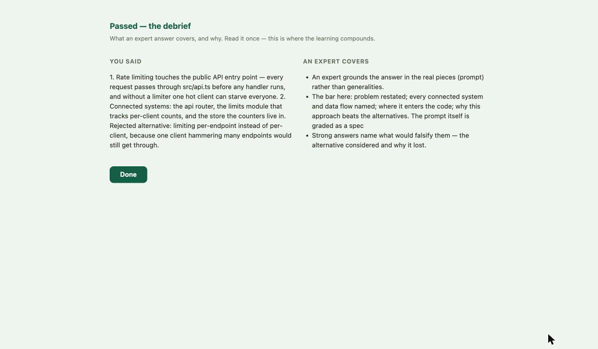
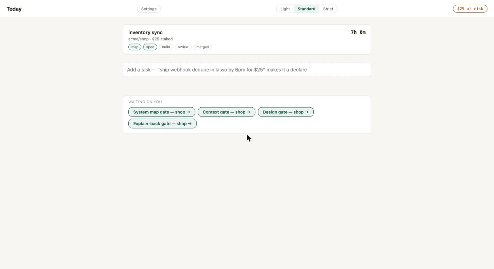
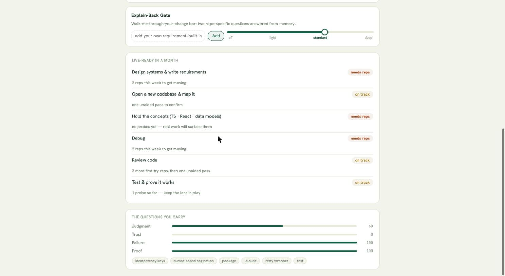

Lasso rides with your AI coding agent and harnesses your understanding of what it builds. Watch:
~/app $ claude > wire up the payment webhook ⏸ Lasso: gate open, prompt held until you pass
🪢 Lasso · Task gate closed book · ~2 min
The systems involved, and how data moves between them
Stripe calls our webhook when a payment settles and it updates the order.
✓ entry point named
~ “it updates the order”, which it? The handler writes the DB directly, or through the queue?webhooks.ts:41
∅ What happens when Stripe sends the same event twice, not written
↺ Rewrite from scratch. Your draft clears✓ Passed, prompt released, build on
1 · You hand work to the agent…2 · Lasso holds it, gate open.3 · You explain it. Closed book.4 · It marks exactly what's missing.5 · Get it right, and the work flows.
You think through everything you push. The gates make sure of it, and there’s no way around them. Every pass sharpens a skill you keep.
› new tasktask gate3 minreview gate7 min✓ merged
Minutes at the gate. Hours in flow. Skip one → −$25.
One task, start to finish
1
Your whole day, one screen
Your tasks, their gates, and what’s waiting on you. One line adds a task.
Lasso · Today
Today
LightStandardStricttrend ▲ 74%
Dedupe webhook deliveries so replays can’t double-fire gates
declared · repo lasso
map ✓task ●buildreviewmerged
5:42:10
by 6:00 pm
Add a task… fix flaky presence test by friday
2
The gate takes your screen
Send the first prompt of a new task and the lock window appears over everything. Only when work moves, never in between.
Your screen, 2:03 pm
~/lasso $ claude > implement webhook dedupe by delivery id ⏸ Lasso: context gate pending, prompt held
🪢 Lasso · Task gate · lasso ~4 min
Before this prompt goes out: explain what you’re building and the systems involved, from memory.
This window is fullscreen and can’t be closed. Pass the gate (or take the abandon door) to get your screen back.
Can’t close it: no ✕, always on topCan’t switch away: the window pulls focus right back3+ seconds away = fee: and mid-answer, your attempt clearsAlways an exit: abandon door, with its cost shown
3
Closed book.
Nothing you were given is visible: no brief, no code, no notes, paste off. Explaining it cold is the proof. Leave mid-answer and the attempt clears.
Task gate · lasso
~4 min
Closed book, hidden until you pass:your task briefthe codeClaude’s outputyour notespaste off
Why this task, why now, what it unlocks, what you’re deliberately not doing
Replayed webhook deliveries can flip a check twice and double-charge a stake, it blocks trusting the ledger. Not touching polling fallback; it already dedupes.
The problem, in your own words
GitHub redelivers webhooks on timeout. We treat each delivery as new, so one PR event can create two gates.
The systems involved, and how data moves between them
GitHub → webhook route → gate engine → SQLite ledger. The lock window only renders what the server decides.
Your approach, and why over the alternatives
Done means…
Abandon, $5 · work stays frozen, gate resumes
4
See exactly what you’re missing
Never a score, your own words, marked up. At most four gaps, one pushback question each. Then you rewrite from scratch. If you need the material again, re-study is timed, with a tutor that never answers the gate.
Task gate · attempt 1, close, not yet
rewrite from scratch to continue
✓ solid~ vague∅ missing✕ wrong
Coverage
✓Replayed webhook deliveries can flip a check twice and double-charge a stake…
✓GitHub redelivers webhooks on timeout. We treat each delivery as new…
Where exactly does a delivery become a gate? You’ve named the boxes but not the hand-off that duplicates.webhooks.ts:41 → engine.decide(), the call replays pass through twice
✕“Polling fallback already dedupes.”
The repo disagrees. The poller inserts by (repo, event) with no delivery id, replays reach it clean. What key would make both paths idempotent?watchdog.ts:88, pollOnce() has no delivery-id check
∅Your approach, and why over the alternatives, not written
∅Done means…, not written
Your draft clears. Patched sentences aren’t understanding.
5
Pass, then build
Your answer beside what an expert covers. Then the prompt releases.
Task gate · attempt 2
✓ Passed, prompt released, flow window open
You said
Dedupe by delivery id at the route, same key in the poller
Replays ack 202, never an error, never a second decide()
Done: replay test green, ledger shows one row per event
An expert also covers
The dedupe table needs a retention window unbounded growth is tomorrow’s incident
Idempotency keys survive force-push identity by delivery, not SHA, rebases rewrite SHAs
6
Nothing merges past you
Say what the change does, where it breaks, what proves it works, graded against a hidden review of the real diff. Your findings post as real PR comments.
Review gate · PR #31, dedupe webhook deliveries
~7 min
Where it breaks, the issues you found
HDedupe INSERT and decide() aren’t in one transaction, a crash between them replays the gate on restart. → posted to PR #31
Mdeliveries table has no pruning, unbounded growth. → posted to PR #31
What proves it works, tests present, and the gaps
Replay test covers the route. Gap: no test for a replay arriving during decide(), the race the transaction fix exists for.
Ship or don’t ship, and why
Don’t ship until the transaction lands; the race recreates the bug this PR exists to kill.
required check: lasso/understanding · pending → ✓ on verdict only
7
Bugs end in evidence, not guesses
Hypotheses, the evidence that killed each, the root cause, the regression test.
① Timer drift, killed: fake timers, no real clock in the path. ② Test-order dependence, killed: fails solo too. ③ The 3s blur threshold compares wall-clock to the monitor start, not blur start. survives: logging shows elapsed measured from the wrong anchor.
Root cause, and why it’s not just the symptom
Violation window anchored to monitor start; any test spending <3s before blur can never violate. The flake is scheduling noise over a deterministic bug.
The fix, plus the regression test that pins it
Anchor to blurAt. Test: blur at t+1ms, advance 3s, expect exactly one violation.
8
You set how hard it pushes
Drag a bar to set a gate’s difficulty. Harder is instant; easier takes 48 hours; review can’t drop below Light while a deadline is live.
Lasso · Settings · Gates
global: Standard
Task
LightStandardStrict
Full scaffold, systems + approach graded; done-when required.
Design
LightStandardStrict
✓ custom: tradeoffs need numbers; failure modes red-teamed in the gap map.
Review
Light ⌊floor⌋StandardStrict
Findings vs. the withheld reference review + test gaps. Floor: can’t drop below Light while a declare is live. Strict adds: write one missing test.
Debug
LightStandardStrict
Strict → Standard applies Thu 11:02: easing takes 48h; hardening is instant.
✓
This is the real app, running
Not mockups: a live session, captured today. The gap map and difficulty bars above ship next.

The gate, live. A real prompt held, questions cite the actual repo; paste is off; confidence tap before submit.

Passed, the debrief. Your answer beside what an expert covers; then the prompt releases.

Today. A live task with its countdown and gate chain, and the gates waiting on you.

Settings. Every gate's bar is visible and extensible, built-ins can never be removed; loosening takes 48h.
9
Skipping isn’t an option
Finish honestly and it costs nothing. Walk away mid-gate or sneak code past one, and it costs real money.
Lasso · ledger
Dedupe webhook deliveries
shipped 4:48 pm · every gate passed
$0
nothing charged
Push to dev at 2:11 pm, no gate on record
integrity breach · the skipped gate fires before your next delegation
−$25
skipping charged
Fullscreen takeover: unclosable, focus-recaptured, 3s away = feeForced retrieval: leave mid-answer and the attempt clearsFail-frozen-but-free: outages never auto-pass, never chargeFive habits: systems · task choice · design · review · debug